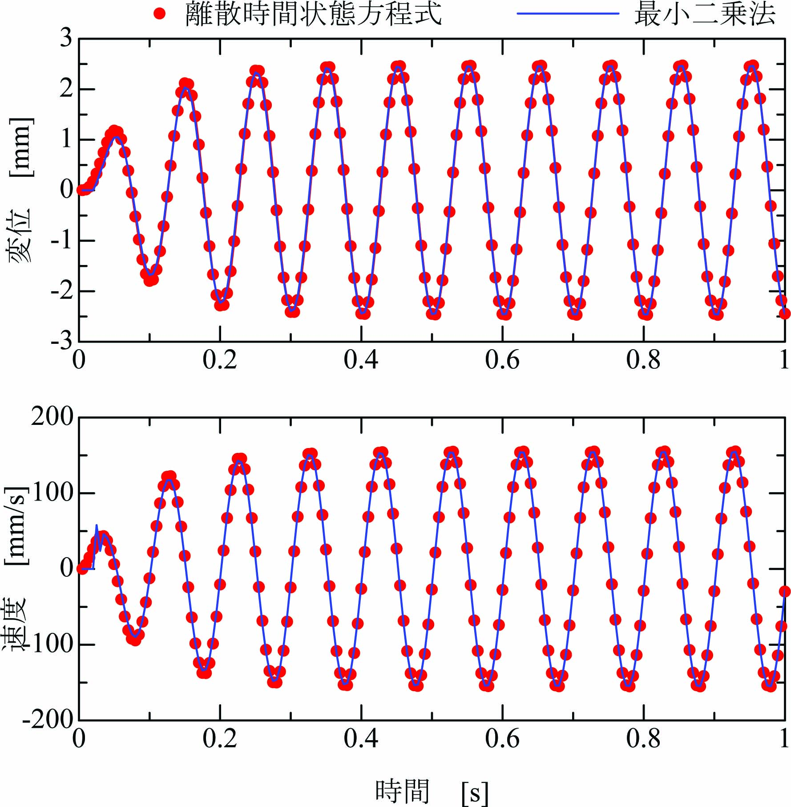

係数行列\(\mathbf{P}\)、\(\mathbf{Q}\)を用いて １自由度粘弾性振動系 の離散時間状態方程式は次式で記述されます。
\begin{align} \mathbf{x}(n+1)=\mathbf{P}\mathbf{x}(n) + \mathbf{Q}u(n) \label{eq:DiscStateEq} \end{align}１自由度粘弾性振動系の固有振動数\(\omega_n=6.28×10\)[rad/s]、粘性係数\(\zeta=0.2\)、 サンプリング周期\(T=0.005\)[s]とすると、 行列\(\mathbf{P}\)、\(\mathbf{Q}\)は次式になります。
\begin{align} \mathbf{P}= \left[ \begin{array}{@{\,}cc} 0.9531&0.004222\\ -18.23&0.8370 \end{array} \right],~~~ \mathbf{Q}= \left[ \begin{array}{@{\,}c} -0.04691\\ 18.23 \end{array} \right]. \label{eq:RtnEqn} \end{align}式\eqref{eq:DiscStateEq}を次式のように変形します。
\begin{align} \mathbf{x}(n+1) = [\mathbf{P}~~\mathbf{Q}] \left[ \begin{array}{@{\,}c} \mathbf{x}(n)\\ \mathbf{u}(n) \end{array} \right] \label{eq:DiscStateEq2} \end{align}ここで、ベクトル\(\mathbf{x}(n+1)\)を\(\mathbf{y}(n)\)、 \([\mathbf{x}(n)~~\mathbf{u}(n)]^T\)を\(\mathbf{x}(n)\)、 行列\([\mathbf{P}~~\mathbf{Q}]\)を\(\mathbf{A}\)と表記すると、 式\eqref{eq:DiscStateEq}が 最小二乗法 の形式になっていることが確認できます。
\begin{align} \mathbf{y}(n) = \mathbf{A}\mathbf{x}(n) \label{eq:LstEQ} \end{align}式\eqref{eq:LstEQ}に次式の逐次最小二乗法 を適用します。
\begin{align} \left. \begin{array}{@{\,}rl} \mathbf{A}(n)&=~\mathbf{A}(n-1)+\{\mathbf{y}(n)-\mathbf{A}(n-1)\mathbf{x}(n)\}\mathbf{K}(n)\\ \mathbf{K}(n)&=~\mathbf{x}(n)^T\mathbf{R}(n)\nonumber\\ \mathbf{R}(n)&=~\frac{1}{\lambda}\mathbf{R}(n-1)-\frac{1}{\mu}\mathbf{R}(n-1)\mathbf{x}(n)\mathbf{x}(n)^T\mathbf{R}(n-1)\\ \mu&=~\lambda+\mathbf{x}(n)^T\mathbf{R}(n-1)\mathbf{x}(n) \end{array} \right\} \end{align}最小二乗法によって得られる係数行列\([\mathbf{P}_L~~\mathbf{Q}_L]=\mathbf{A}_L\)は下記となります。
\begin{align} \mathbf{P}_L= \left[ \begin{array}{@{\,}cc} 0.9469&0.00599\\ -20.62&0.8279 \end{array} \right],~~~ \mathbf{Q}_L= \left[ \begin{array}{@{\,}c} -0.05052\\ 19.67 \end{array} \right]. \label{eq:MatLst} \end{align}離散時間状態方程式と最小二乗法で計算される変位\(x\)と速度\(\dot x\)は下図となります。
